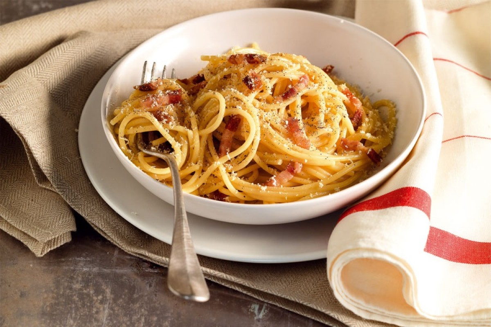

Classic Carbonara

Description
Find out how to make our recipe for the best spaghetti carbonara:
a tasty dish that everyone likes and perfect if you want to make
a simple but delicious dish.
Ingredients
- 12 OZ. of spaghetti
- 4 OZ. of guanciale, trimmed
- 2 TBSP. of aged Pecorino Romano cheese, grated
- 2 TBSP. of Grana Padano cheese, grated
- 4 of very fresh egg yolks
- salt
- black pepper
Steps
- Cut the guanciale into 1/4-inch layers, then into long, 2-inch strips.
- Combine the egg yolks with the grated cheeses and a pinch of black pepper.
- Brown the strips of guanciale for 2 minutes until crisp in a hot frying pan, then turn off the heat and leave to cool.
- Cook the pasta in plenty of salted water.
- Pour the reserved hot water into the part of the frying pan containing the cooled guanciale.
- Transfer the pasta to the same pan and mix together, then add the yolk and cheese mixture, stirring rapidly.
- In the warm pan with the hot pasta, the eggs will cook gently and become creamy.
- Season with freshly-milled black pepper and serve immediately on heated plates.